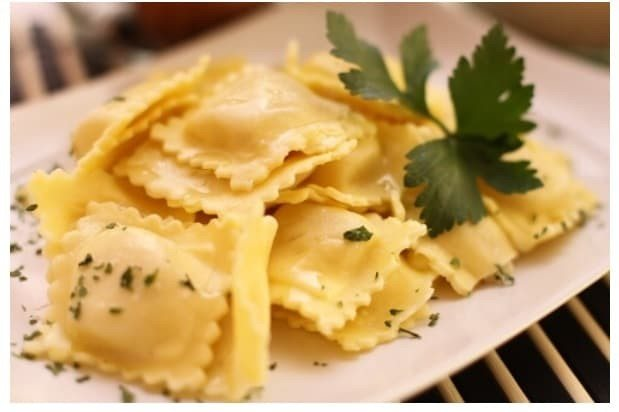

Massas
Ravioli

Ingredientes
- 1 peito de frango
- Sal e pimenta-do-reino a gosto
- 2 colheres (sopa) de manteiga
- 100 g de presunto moído
- ½ xícara de parmesão ralado
- 1 gema
- 2 colheres (sopa) de requeijão cremoso
- ½ colher (chá) de noz-moscada ralada
- 1 receita de Massa básica de macarrão
Modo de preparo
- Elimine a pele e desosse o peito de frango. Tempere com sal e pimenta a gosto.
- Numa panela, aqueça a manteiga até derreter. Junte o peito de frango e cozinhe por cerca de 15 minutos.
- Passe o frango na máquina de moer e ponha de volta na panela, misturando com o molho do cozimento. Passe para uma tigela e deixe esfriar.
- Acrescente os ingredientes restantes, menos a Massa básica de macarrão, e misture bem. Cubra a tigela e reserve.
- Prepare a Massa básica de macarrão como explica a ficha.
- Abra a massa bem fino com um rolo e corte-a em tiras de 4 cm de largura.
- Faça montinhos de 2 colheres (sopa) de recheio sobre uma tira de massa, em intervalos regulares. Cubra com outra tira, aperte as laterais e entre os montinhos de recheio para fechar. Corte em quadrados e vá colocando em uma assadeira forrada com papel-manteiga e polvilhada com farinha. Repita a operação até terminar as tiras de massa. Congele.
Observação
Os ravioli cozinham tão rapidamente que não é conveniente congelá-los prontos; mas, se houver sobra, congele num recipiente que feche bem e reaqueça no forno coberto com papel-alumínio. Congelamento: leve a assadeira com os ravioli ao freezer, sem cobrir, até ficarem duros; passe para um saco plástico que feche hermeticamente, etiquete e congele. Descongelamento: cozinhe os ravioli ainda congelados em bastante água fervente com sal; escorra, cubra com o molho de sua preferência e sirva.